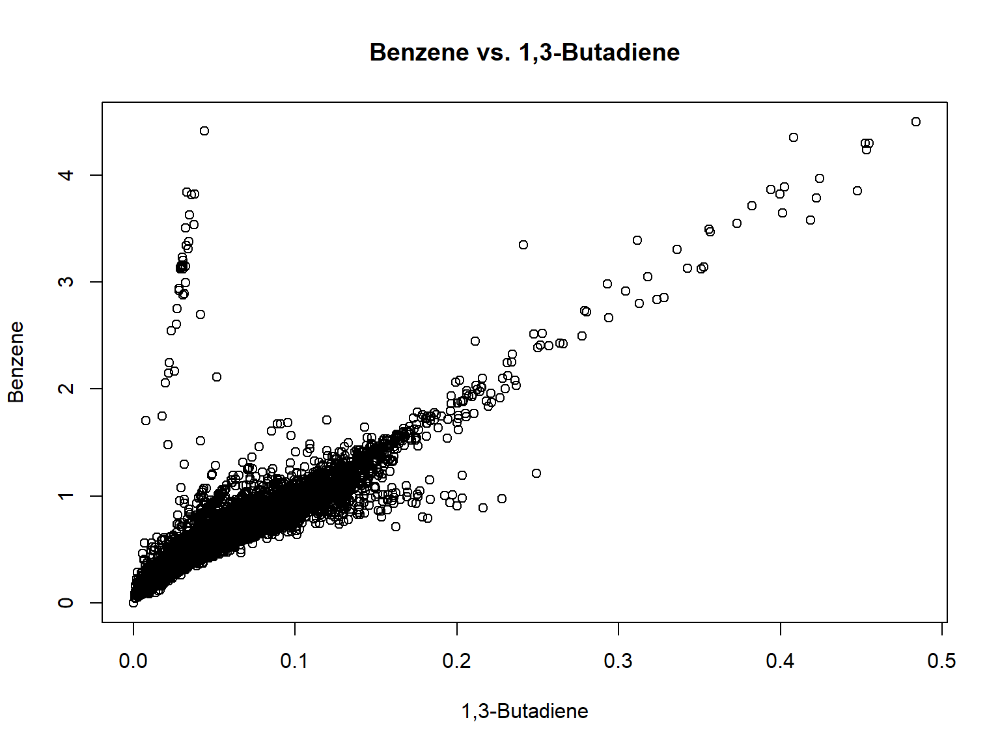

Ambareesh Jonnavittula
28/12/2021
Over the years, there have been various toxic pollutants which have caused Cancer among the people across the counties of California, USA.
The objective of this task is to be able to identify if there is high risk of multiple carcinogens in association with each other in each of the tract in California, USA.
Note - In addition, this piece of code is reproducible, hence we could scale it to any state of the USA within the dataset.
## Importing / Reading the data into "df_cea" data frame
df_cea_raw <- read_excel("ARM Dataset.xlsx", sheet = 1)
# Inspect the raw data
head(df_cea_raw)## # A tibble: 6 x 5
## State County Tract Pollutant.Name Total.Conc
## <chr> <chr> <dbl> <chr> <dbl>
## 1 AK Aleutians East Borough 2013000100 ACETALDEHYDE 0.00174
## 2 AK Aleutians West Census Area 2016000100 ACETALDEHYDE 0.000160
## 3 AK Aleutians West Census Area 2016000200 ACETALDEHYDE 0.00461
## 4 AK Anchorage Municipality 2020000101 ACETALDEHYDE 0.0287
## 5 AK Anchorage Municipality 2020000102 ACETALDEHYDE 0.0738
## 6 AK Anchorage Municipality 2020000201 ACETALDEHYDE 0.308## # A tibble: 6 x 5
## State County Tract Pollutant.Name Total.Conc
## <chr> <chr> <dbl> <chr> <dbl>
## 1 WY Sweetwater 0 TOLUENE 0.375
## 2 WY Teton 0 TOLUENE 0.141
## 3 WY Uinta 0 TOLUENE 0.426
## 4 WY Washakie 0 TOLUENE 0.303
## 5 WY Weston 0 TOLUENE 0.140
## 6 WY Entire state 0 TOLUENE 0.611## [1] "State" "County" "Tract" "Pollutant.Name"
## [5] "Total.Conc"## State County Tract Pollutant.Name
## Length:464075 Length:464075 Min. :0.000e+00 Length:464075
## Class :character Class :character 1st Qu.:1.208e+10 Class :character
## Mode :character Mode :character Median :2.616e+10 Mode :character
## Mean :2.720e+10
## 3rd Qu.:4.102e+10
## Max. :7.803e+10
## Total.Conc
## Min. : 0.00000
## 1st Qu.: 0.04734
## Median : 0.54590
## Mean : 1.02659
## 3rd Qu.: 1.52100
## Max. :39.66581## tibble [464,075 x 5] (S3: tbl_df/tbl/data.frame)
## $ State : chr [1:464075] "AK" "AK" "AK" "AK" ...
## $ County : chr [1:464075] "Aleutians East Borough" "Aleutians West Census Area" "Aleutians West Census Area" "Anchorage Municipality" ...
## $ Tract : num [1:464075] 2.01e+09 2.02e+09 2.02e+09 2.02e+09 2.02e+09 ...
## $ Pollutant.Name: chr [1:464075] "ACETALDEHYDE" "ACETALDEHYDE" "ACETALDEHYDE" "ACETALDEHYDE" ...
## $ Total.Conc : num [1:464075] 0.00174 0.00016 0.00461 0.02869 0.07384 ...## [1] 464075 5# Renaming the columns as part of simplification
names(df_cea_raw)[names(df_cea_raw) == 'State'] <- 'state'
names(df_cea_raw)[names(df_cea_raw) == 'County'] <- 'county'
names(df_cea_raw)[names(df_cea_raw) == 'Tract'] <- 'tract'
names(df_cea_raw)[names(df_cea_raw) == 'Pollutant.Name'] <- 'pollutant'
names(df_cea_raw)[names(df_cea_raw) == 'Total.Conc'] <- 'total_conc'# 4.1 Subset to state CA
df_cea <- select(filter(df_cea_raw,
state == "CA" &
tract != 0 & pollutant != '' )
,c(tract, pollutant, total_conc))
# 4.2 Aggregate data using averages
df_cea_agg <- df_cea %>%
group_by(tract, pollutant) %>%
summarise_at(vars(c(1)), list(avg = mean))
# 4.3 String manipulations within Pollutant
df_cea_agg$pollutant <- str_to_title(df_cea_agg$pollutant)
# 4.4 Pivot pollutants and total conc columns
df_cea_piv <- df_cea_agg %>%
pivot_wider(names_from = pollutant,
values_from = avg)
# 4.5 Convert tract into a categorical variable
df_cea_piv$tract <- as.factor(df_cea_piv$tract)
# 4.5 Drop the raw dataframe
remove(df_cea_raw)## # A tibble: 6 x 7
## # Groups: tract [6]
## tract `1,3-Butadiene` Acetaldehyde Benzene `Cyanide Compound~ `Diesel Pm`
## <fct> <dbl> <dbl> <dbl> <dbl> <dbl>
## 1 6001400100 0.0516 1.12 0.480 0.00290 0.793
## 2 6001400200 0.105 1.34 0.965 0.00326 2.37
## 3 6001400300 0.104 1.34 0.956 0.00331 2.33
## 4 6001400400 0.0999 1.31 0.915 0.00350 1.55
## 5 6001400500 0.0902 1.27 0.838 0.00373 1.34
## 6 6001400600 0.106 1.38 0.953 0.00359 2.01
## # ... with 1 more variable: Toluene <dbl>## # A tibble: 6 x 7
## # Groups: tract [6]
## tract `1,3-Butadiene` Acetaldehyde Benzene `Cyanide Compound~ `Diesel Pm`
## <fct> <dbl> <dbl> <dbl> <dbl> <dbl>
## 1 6115040700 0.0350 2.19 0.414 0.00266 0.332
## 2 6115040800 0.0255 2.17 0.332 0.000995 0.255
## 3 6115040901 0.0216 2.19 0.273 0.000960 0.188
## 4 6115040902 0.0212 2.16 0.283 0.00128 0.173
## 5 6115041000 0.0187 2.31 0.253 0.000696 0.173
## 6 6115041100 0.0143 2.23 0.170 0.000257 0.0696
## # ... with 1 more variable: Toluene <dbl>## [1] "tract" "1,3-Butadiene" "Acetaldehyde"
## [4] "Benzene" "Cyanide Compounds" "Diesel Pm"
## [7] "Toluene"## grouped_df [8,177 x 7] (S3: grouped_df/tbl_df/tbl/data.frame)
## $ tract : Factor w/ 8177 levels "6001400100","6001400200",..: 1 2 3 4 5 6 7 8 9 10 ...
## $ 1,3-Butadiene : num [1:8177] 0.0516 0.1051 0.1036 0.0999 0.0902 ...
## $ Acetaldehyde : num [1:8177] 1.12 1.34 1.34 1.31 1.27 ...
## $ Benzene : num [1:8177] 0.48 0.965 0.956 0.915 0.838 ...
## $ Cyanide Compounds: num [1:8177] 0.0029 0.00326 0.00331 0.0035 0.00373 ...
## $ Diesel Pm : num [1:8177] 0.793 2.373 2.328 1.555 1.335 ...
## $ Toluene : num [1:8177] 1.68 3.57 3.59 3.39 3.24 ...
## - attr(*, "groups")= tibble [8,177 x 2] (S3: tbl_df/tbl/data.frame)
## ..$ tract: Factor w/ 8177 levels "6001400100","6001400200",..: 1 2 3 4 5 6 7 8 9 10 ...
## ..$ .rows: list<int> [1:8177]
## .. ..$ : int 1
## .. ..$ : int 2
## .. ..$ : int 3
## .. ..$ : int 4
## .. ..$ : int 5
## .. ..$ : int 6
## .. ..$ : int 7
## .. ..$ : int 8
## .. ..$ : int 9
## .. ..$ : int 10
## .. ..$ : int 11
## .. ..$ : int 12
## .. ..$ : int 13
## .. ..$ : int 14
## .. ..$ : int 15
## .. ..$ : int 16
## .. ..$ : int 17
## .. ..$ : int 18
## .. ..$ : int 19
## .. ..$ : int 20
## .. ..$ : int 21
## .. ..$ : int 22
## .. ..$ : int 23
## .. ..$ : int 24
## .. ..$ : int 25
## .. ..$ : int 26
## .. ..$ : int 27
## .. ..$ : int 28
## .. ..$ : int 29
## .. ..$ : int 30
## .. ..$ : int 31
## .. ..$ : int 32
## .. ..$ : int 33
## .. ..$ : int 34
## .. ..$ : int 35
## .. ..$ : int 36
## .. ..$ : int 37
## .. ..$ : int 38
## .. ..$ : int 39
## .. ..$ : int 40
## .. ..$ : int 41
## .. ..$ : int 42
## .. ..$ : int 43
## .. ..$ : int 44
## .. ..$ : int 45
## .. ..$ : int 46
## .. ..$ : int 47
## .. ..$ : int 48
## .. ..$ : int 49
## .. ..$ : int 50
## .. ..$ : int 51
## .. ..$ : int 52
## .. ..$ : int 53
## .. ..$ : int 54
## .. ..$ : int 55
## .. ..$ : int 56
## .. ..$ : int 57
## .. ..$ : int 58
## .. ..$ : int 59
## .. ..$ : int 60
## .. ..$ : int 61
## .. ..$ : int 62
## .. ..$ : int 63
## .. ..$ : int 64
## .. ..$ : int 65
## .. ..$ : int 66
## .. ..$ : int 67
## .. ..$ : int 68
## .. ..$ : int 69
## .. ..$ : int 70
## .. ..$ : int 71
## .. ..$ : int 72
## .. ..$ : int 73
## .. ..$ : int 74
## .. ..$ : int 75
## .. ..$ : int 76
## .. ..$ : int 77
## .. ..$ : int 78
## .. ..$ : int 79
## .. ..$ : int 80
## .. ..$ : int 81
## .. ..$ : int 82
## .. ..$ : int 83
## .. ..$ : int 84
## .. ..$ : int 85
## .. ..$ : int 86
## .. ..$ : int 87
## .. ..$ : int 88
## .. ..$ : int 89
## .. ..$ : int 90
## .. ..$ : int 91
## .. ..$ : int 92
## .. ..$ : int 93
## .. ..$ : int 94
## .. ..$ : int 95
## .. ..$ : int 96
## .. ..$ : int 97
## .. ..$ : int 98
## .. ..$ : int 99
## .. .. [list output truncated]
## .. ..@ ptype: int(0)
## ..- attr(*, ".drop")= logi TRUE## tract 1,3-Butadiene Acetaldehyde Benzene
## 6001400100: 1 Min. :0.00000 Min. :0.000 Min. :0.0000
## 6001400200: 1 1st Qu.:0.03514 1st Qu.:1.377 1st Qu.:0.4690
## 6001400300: 1 Median :0.05926 Median :1.726 Median :0.6846
## 6001400400: 1 Mean :0.06361 Mean :1.682 Mean :0.6973
## 6001400500: 1 3rd Qu.:0.08328 3rd Qu.:1.973 3rd Qu.:0.8495
## 6001400600: 1 Max. :0.48383 Max. :3.127 Max. :4.4989
## (Other) :8171 NA's :120 NA's :120 NA's :120
## Cyanide Compounds Diesel Pm Toluene
## Min. :0.0000000 Min. :0.01124 Min. : 0.000
## 1st Qu.:0.0000007 1st Qu.:0.49677 1st Qu.: 1.509
## Median :0.0002866 Median :0.88782 Median : 2.574
## Mean :0.0041891 Mean :1.00194 Mean : 2.728
## 3rd Qu.:0.0041889 3rd Qu.:1.35671 3rd Qu.: 3.687
## Max. :0.3525916 Max. :8.83122 Max. :16.180
## NA's :1 NA's :154 NA's :120## [1] 8177## [1] 7## [1] 8177 7## tract 1,3-Butadiene Acetaldehyde Benzene
## 6001400100: 1 Min. :0.00000 Min. :0.000 Min. :0.0000
## 6001400200: 1 1st Qu.:0.03399 1st Qu.:1.359 1st Qu.:0.4572
## 6001400300: 1 Median :0.05856 Median :1.717 Median :0.6795
## 6001400400: 1 Mean :0.06268 Mean :1.657 Mean :0.6870
## 6001400500: 1 3rd Qu.:0.08272 3rd Qu.:1.969 3rd Qu.:0.8465
## 6001400600: 1 Max. :0.48383 Max. :3.127 Max. :4.4989
## (Other) :8171
## Cyanide Compounds Diesel Pm Toluene
## Min. :0.0000000 Min. :0.0000 Min. : 0.000
## 1st Qu.:0.0000006 1st Qu.:0.4738 1st Qu.: 1.457
## Median :0.0002861 Median :0.8701 Median : 2.543
## Mean :0.0041886 Mean :0.9831 Mean : 2.688
## 3rd Qu.:0.0041845 3rd Qu.:1.3477 3rd Qu.: 3.668
## Max. :0.3525916 Max. :8.8312 Max. :16.180
## rownames(df_cea_piv) <- df_cea_piv$tract
corrmatrix <- cor(df_cea_piv[,2:7])
corrplot(corrmatrix, method = 'number')# 5.3 - Boxplot - Total Concentration by Pollutant
ggplot(df_cea, aes(x=pollutant, y=total_conc, fill=pollutant)) +
geom_boxplot()+
labs(title="Box plot - Total Concentration by Pollutant",x="Pollutant", y = "Concentration")+ scale_fill_brewer(palette="Dark2") + theme_minimal() +
theme(plot.title = element_text(hjust = 0.5))# Toluene vs. 1,3-Butadiene
plot(Toluene ~ `1,3-Butadiene`, data = df_cea_piv, main = "Toluene vs. 1,3-Butadiene")# Benzene vs. 1,3-Butadiene
plot(Benzene ~ `1,3-Butadiene`, data = df_cea_piv, main = "Benzene vs. 1,3-Butadiene")
# Toluene vs. Diesel PM
plot(Toluene ~ `Diesel Pm`, data = df_cea_piv, main = "Toluene vs. Diesel PM")# Apply the lm() function.
relation <- lm(df_cea_piv$`1,3-Butadiene` ~ df_cea_piv$Benzene)
print(summary(relation))##
## Call:
## lm(formula = df_cea_piv$`1,3-Butadiene` ~ df_cea_piv$Benzene)
##
## Residuals:
## Min 1Q Median 3Q Max
## -0.35588 -0.00783 -0.00088 0.00725 0.13917
##
## Coefficients:
## Estimate Std. Error t value Pr(>|t|)
## (Intercept) 0.0004434 0.0005072 0.874 0.382
## df_cea_piv$Benzene 0.0905868 0.0006383 141.913 <2e-16 ***
## ---
## Signif. codes: 0 '***' 0.001 '**' 0.01 '*' 0.05 '.' 0.1 ' ' 1
##
## Residual standard error: 0.02305 on 8175 degrees of freedom
## Multiple R-squared: 0.7113, Adjusted R-squared: 0.7112
## F-statistic: 2.014e+04 on 1 and 8175 DF, p-value: < 2.2e-16# Create Benchmark Variables to classify the variables
# Anything greater than avg, can be considered as High or else Low conc
toluene_50 <- mean(df_cea_piv$Toluene)
butadiene_50 <- mean(df_cea_piv$`1,3-Butadiene`)
acetaldehyde_50 <- mean(df_cea_piv$Acetaldehyde)
benzene_50 <- mean(df_cea_piv$Benzene)
cyanide_50 <- mean(df_cea_piv$`Cyanide Compounds`)
diesel_50 <- mean(df_cea_piv$`Diesel Pm`)
# Convert continuous values into dichotomous variables (High/Low)
df_cea_piv <- df_cea_piv %>% mutate(Toluene = ifelse(Toluene > toluene_50, "H", "L"))
df_cea_piv <- df_cea_piv %>% mutate(`1,3-Butadiene` = ifelse(`1,3-Butadiene` > butadiene_50, "H", "L"))
df_cea_piv <- df_cea_piv %>% mutate(Acetaldehyde = ifelse(Acetaldehyde > acetaldehyde_50, "H", "L"))
df_cea_piv <- df_cea_piv %>% mutate(Benzene = ifelse(Benzene > benzene_50, "H", "L"))
df_cea_piv <- df_cea_piv %>% mutate(`Cyanide Compounds` = ifelse(`Cyanide Compounds` > cyanide_50, "H", "L"))
df_cea_piv <- df_cea_piv %>% mutate(`Diesel Pm` = ifelse(`Diesel Pm` > diesel_50, "H", "L"))
# Convert to factor
df_cea_piv$Toluene <- as.factor(df_cea_piv$Toluene)
df_cea_piv$`1,3-Butadiene` <- as.factor(df_cea_piv$`1,3-Butadiene`)
df_cea_piv$Acetaldehyde <- as.factor(df_cea_piv$Acetaldehyde)
df_cea_piv$Benzene <- as.factor(df_cea_piv$Benzene)
df_cea_piv$`Cyanide Compounds` <- as.factor(df_cea_piv$`Cyanide Compounds`)
df_cea_piv$`Diesel Pm` <- as.factor(df_cea_piv$`Diesel Pm`)
# Check frequency
as.data.frame(table(df_cea_piv$Toluene)) ## Var1 Freq
## 1 H 3811
## 2 L 4366## Var1 Freq
## 1 H 3714
## 2 L 4463## Var1 Freq
## 1 H 4445
## 2 L 3732## Var1 Freq
## 1 H 4002
## 2 L 4175## Var1 Freq
## 1 H 2044
## 2 L 6133## Var1 Freq
## 1 H 3580
## 2 L 4597| Name | df_cea_arm |
| Number of rows | 8177 |
| Number of columns | 6 |
| _______________________ | |
| Column type frequency: | |
| factor | 6 |
| ________________________ | |
| Group variables | None |
Variable type: factor
| skim_variable | n_missing | complete_rate | ordered | n_unique | top_counts |
|---|---|---|---|---|---|
| 1,3-Butadiene | 0 | 1 | FALSE | 2 | L: 4463, H: 3714 |
| Acetaldehyde | 0 | 1 | FALSE | 2 | H: 4445, L: 3732 |
| Benzene | 0 | 1 | FALSE | 2 | L: 4175, H: 4002 |
| Cyanide Compounds | 0 | 1 | FALSE | 2 | L: 6133, H: 2044 |
| Diesel Pm | 0 | 1 | FALSE | 2 | L: 4597, H: 3580 |
| Toluene | 0 | 1 | FALSE | 2 | L: 4366, H: 3811 |
# Concentration_Tracts
#colSums() function computes the sums of columns.
high <- colSums(df_cea_arm == "H")
high## 1,3-Butadiene Acetaldehyde Benzene Cyanide Compounds
## 3714 4445 4002 2044
## Diesel Pm Toluene
## 3580 3811## 1,3-Butadiene Acetaldehyde Benzene Cyanide Compounds
## 4463 3732 4175 6133
## Diesel Pm Toluene
## 4597 4366## 1,3-Butadiene Acetaldehyde Benzene Cyanide Compounds Diesel Pm Toluene
## high 3714 4445 4002 2044 3580 3811
## low 4463 3732 4175 6133 4597 4366# 3.1 - Unpivot the Pollutants and risks
df_cea_unpiv <- df_cea_piv %>%
pivot_longer(!tract, names_to = "Pollutant", values_to = "Risk Status")
df_cea_unpiv$Potent_Risk <- ifelse(df_cea_unpiv$`Risk Status` == 'L',
"", df_cea_unpiv$Pollutant)
head(df_cea_unpiv)## # A tibble: 6 x 4
## # Groups: tract [1]
## tract Pollutant `Risk Status` Potent_Risk
## <fct> <chr> <fct> <chr>
## 1 6001400100 1,3-Butadiene L ""
## 2 6001400100 Acetaldehyde L ""
## 3 6001400100 Benzene L ""
## 4 6001400100 Cyanide Compounds L ""
## 5 6001400100 Diesel Pm L ""
## 6 6001400100 Toluene L ""## # A tibble: 6 x 4
## # Groups: tract [1]
## tract Pollutant `Risk Status` Potent_Risk
## <fct> <chr> <fct> <chr>
## 1 6115041100 1,3-Butadiene L ""
## 2 6115041100 Acetaldehyde H "Acetaldehyde"
## 3 6115041100 Benzene L ""
## 4 6115041100 Cyanide Compounds L ""
## 5 6115041100 Diesel Pm L ""
## 6 6115041100 Toluene L ""## [1] ".GlobalEnv" "package:arulesViz" "package:arules"
## [4] "package:Matrix" "package:readxl" "package:corrplot"
## [7] "package:skimr" "package:RColorBrewer" "package:forcats"
## [10] "package:stringr" "package:purrr" "package:readr"
## [13] "package:tidyr" "package:tibble" "package:ggplot2"
## [16] "package:tidyverse" "package:dplyr" "package:shiny"
## [19] "package:stats" "package:graphics" "package:grDevices"
## [22] "package:utils" "package:datasets" "package:methods"
## [25] "Autoloads" "package:base"## [1] 8177 6## # A tibble: 6 x 6
## `1,3-Butadiene` Acetaldehyde Benzene `Cyanide Compounds` `Diesel Pm` Toluene
## <fct> <fct> <fct> <fct> <fct> <fct>
## 1 L L L L L L
## 2 H L H L H H
## 3 H L H L H H
## 4 H L H L H H
## 5 H L H L H H
## 6 H L H L H H## Apriori
##
## Parameter specification:
## confidence minval smax arem aval originalSupport maxtime support minlen
## 0.7 0.1 1 none FALSE TRUE 5 0.3 2
## maxlen target ext
## 3 rules TRUE
##
## Algorithmic control:
## filter tree heap memopt load sort verbose
## 0.1 TRUE TRUE FALSE TRUE 2 TRUE
##
## Absolute minimum support count: 2453
##
## set item appearances ...[0 item(s)] done [0.00s].
## set transactions ...[12 item(s), 8177 transaction(s)] done [0.00s].
## sorting and recoding items ... [11 item(s)] done [0.00s].
## creating transaction tree ... done [0.00s].
## checking subsets of size 1 2 3 done [0.00s].
## writing ... [76 rule(s)] done [0.00s].
## creating S4 object ... done [0.00s].## set of 76 rules
##
## rule length distribution (lhs + rhs):sizes
## 2 3
## 32 44
##
## Min. 1st Qu. Median Mean 3rd Qu. Max.
## 2.000 2.000 3.000 2.579 3.000 3.000
##
## summary of quality measures:
## support confidence coverage lift
## Min. :0.3199 Min. :0.7011 Min. :0.3447 Min. :1.129
## 1st Qu.:0.3741 1st Qu.:0.8375 1st Qu.:0.4378 1st Qu.:1.490
## Median :0.4182 Median :0.8790 Median :0.4677 Median :1.672
## Mean :0.4135 Mean :0.8774 Mean :0.4730 Mean :1.634
## 3rd Qu.:0.4499 3rd Qu.:0.9337 3rd Qu.:0.5138 3rd Qu.:1.821
## Max. :0.5259 Max. :0.9684 Max. :0.7500 Max. :2.054
## count
## Min. :2616
## 1st Qu.:3059
## Median :3420
## Mean :3381
## 3rd Qu.:3679
## Max. :4300
##
## mining info:
## data ntransactions support confidence
## df_cea_arm 8177 0.3 0.7## lhs rhs support
## [1] {Diesel Pm=H} => {1,3-Butadiene=H} 0.3447475
## [2] {1,3-Butadiene=H} => {Diesel Pm=H} 0.3447475
## [3] {Diesel Pm=H} => {Toluene=H} 0.3728751
## [4] {Toluene=H} => {Diesel Pm=H} 0.3728751
## [5] {Diesel Pm=H} => {Benzene=H} 0.3551425
## [6] {Benzene=H} => {Diesel Pm=H} 0.3551425
## [7] {Diesel Pm=H} => {Acetaldehyde=H} 0.3266479
## [8] {1,3-Butadiene=H} => {Toluene=H} 0.3866944
## [9] {Toluene=H} => {1,3-Butadiene=H} 0.3866944
## [10] {1,3-Butadiene=H} => {Benzene=H} 0.4200807
## [11] {Benzene=H} => {1,3-Butadiene=H} 0.4200807
## [12] {Acetaldehyde=L} => {Diesel Pm=L} 0.3452366
## [13] {Acetaldehyde=L} => {Cyanide Compounds=L} 0.3864498
## [14] {Toluene=H} => {Benzene=H} 0.4154335
## [15] {Benzene=H} => {Toluene=H} 0.4154335
## [16] {Benzene=L} => {Toluene=L} 0.4599486
## [17] {Toluene=L} => {Benzene=L} 0.4599486
## [18] {Benzene=L} => {1,3-Butadiene=L} 0.4764584
## [19] {1,3-Butadiene=L} => {Benzene=L} 0.4764584
## [20] {Benzene=L} => {Diesel Pm=L} 0.4279075
## [21] {Diesel Pm=L} => {Benzene=L} 0.4279075
## [22] {Benzene=L} => {Cyanide Compounds=L} 0.4798826
## [23] {Toluene=L} => {1,3-Butadiene=L} 0.4664302
## [24] {1,3-Butadiene=L} => {Toluene=L} 0.4664302
## [25] {Toluene=L} => {Diesel Pm=L} 0.4689984
## [26] {Diesel Pm=L} => {Toluene=L} 0.4689984
## [27] {Toluene=L} => {Cyanide Compounds=L} 0.5086217
## [28] {1,3-Butadiene=L} => {Diesel Pm=L} 0.4527333
## [29] {Diesel Pm=L} => {1,3-Butadiene=L} 0.4527333
## [30] {1,3-Butadiene=L} => {Cyanide Compounds=L} 0.5235416
## [31] {Diesel Pm=L} => {Cyanide Compounds=L} 0.5258652
## [32] {Cyanide Compounds=L} => {Diesel Pm=L} 0.5258652
## [33] {1,3-Butadiene=H,Diesel Pm=H} => {Toluene=H} 0.3279932
## [34] {Diesel Pm=H,Toluene=H} => {1,3-Butadiene=H} 0.3279932
## [35] {1,3-Butadiene=H,Toluene=H} => {Diesel Pm=H} 0.3279932
## [36] {1,3-Butadiene=H,Diesel Pm=H} => {Benzene=H} 0.3293384
## [37] {Benzene=H,Diesel Pm=H} => {1,3-Butadiene=H} 0.3293384
## [38] {1,3-Butadiene=H,Benzene=H} => {Diesel Pm=H} 0.3293384
## [39] {Diesel Pm=H,Toluene=H} => {Benzene=H} 0.3399780
## [40] {Benzene=H,Diesel Pm=H} => {Toluene=H} 0.3399780
## [41] {Benzene=H,Toluene=H} => {Diesel Pm=H} 0.3399780
## [42] {1,3-Butadiene=H,Toluene=H} => {Benzene=H} 0.3744650
## [43] {1,3-Butadiene=H,Benzene=H} => {Toluene=H} 0.3744650
## [44] {Benzene=H,Toluene=H} => {1,3-Butadiene=H} 0.3744650
## [45] {Acetaldehyde=L,Diesel Pm=L} => {Cyanide Compounds=L} 0.3199217
## [46] {Acetaldehyde=L,Cyanide Compounds=L} => {Diesel Pm=L} 0.3199217
## [47] {Benzene=L,Toluene=L} => {1,3-Butadiene=L} 0.4380580
## [48] {1,3-Butadiene=L,Benzene=L} => {Toluene=L} 0.4380580
## [49] {1,3-Butadiene=L,Toluene=L} => {Benzene=L} 0.4380580
## [50] {Benzene=L,Toluene=L} => {Diesel Pm=L} 0.4101749
## [51] {Benzene=L,Diesel Pm=L} => {Toluene=L} 0.4101749
## [52] {Diesel Pm=L,Toluene=L} => {Benzene=L} 0.4101749
## [53] {Benzene=L,Toluene=L} => {Cyanide Compounds=L} 0.4397701
## [54] {Benzene=L,Cyanide Compounds=L} => {Toluene=L} 0.4397701
## [55] {Cyanide Compounds=L,Toluene=L} => {Benzene=L} 0.4397701
## [56] {1,3-Butadiene=L,Benzene=L} => {Diesel Pm=L} 0.4091965
## [57] {Benzene=L,Diesel Pm=L} => {1,3-Butadiene=L} 0.4091965
## [58] {1,3-Butadiene=L,Diesel Pm=L} => {Benzene=L} 0.4091965
## [59] {1,3-Butadiene=L,Benzene=L} => {Cyanide Compounds=L} 0.4557906
## [60] {Benzene=L,Cyanide Compounds=L} => {1,3-Butadiene=L} 0.4557906
## [61] {1,3-Butadiene=L,Cyanide Compounds=L} => {Benzene=L} 0.4557906
## [62] {Benzene=L,Diesel Pm=L} => {Cyanide Compounds=L} 0.4102972
## [63] {Benzene=L,Cyanide Compounds=L} => {Diesel Pm=L} 0.4102972
## [64] {Cyanide Compounds=L,Diesel Pm=L} => {Benzene=L} 0.4102972
## [65] {1,3-Butadiene=L,Toluene=L} => {Diesel Pm=L} 0.4182463
## [66] {Diesel Pm=L,Toluene=L} => {1,3-Butadiene=L} 0.4182463
## [67] {1,3-Butadiene=L,Diesel Pm=L} => {Toluene=L} 0.4182463
## [68] {1,3-Butadiene=L,Toluene=L} => {Cyanide Compounds=L} 0.4488199
## [69] {Cyanide Compounds=L,Toluene=L} => {1,3-Butadiene=L} 0.4488199
## [70] {1,3-Butadiene=L,Cyanide Compounds=L} => {Toluene=L} 0.4488199
## [71] {Diesel Pm=L,Toluene=L} => {Cyanide Compounds=L} 0.4499205
## [72] {Cyanide Compounds=L,Toluene=L} => {Diesel Pm=L} 0.4499205
## [73] {Cyanide Compounds=L,Diesel Pm=L} => {Toluene=L} 0.4499205
## [74] {1,3-Butadiene=L,Diesel Pm=L} => {Cyanide Compounds=L} 0.4374465
## [75] {1,3-Butadiene=L,Cyanide Compounds=L} => {Diesel Pm=L} 0.4374465
## [76] {Cyanide Compounds=L,Diesel Pm=L} => {1,3-Butadiene=L} 0.4374465
## confidence coverage lift count
## [1] 0.7874302 0.4378134 1.733661 2819
## [2] 0.7590199 0.4542008 1.733661 2819
## [3] 0.8516760 0.4378134 1.827382 3049
## [4] 0.8000525 0.4660633 1.827382 3049
## [5] 0.8111732 0.4378134 1.657412 2904
## [6] 0.7256372 0.4894215 1.657412 2904
## [7] 0.7460894 0.4378134 1.372502 2671
## [8] 0.8513732 0.4542008 1.826733 3162
## [9] 0.8297035 0.4660633 1.826733 3162
## [10] 0.9248788 0.4542008 1.889739 3435
## [11] 0.8583208 0.4894215 1.889739 3435
## [12] 0.7564309 0.4564021 1.345516 2823
## [13] 0.8467310 0.4564021 1.128929 3160
## [14] 0.8913671 0.4660633 1.821267 3397
## [15] 0.8488256 0.4894215 1.821267 3397
## [16] 0.9008383 0.5105785 1.687163 3761
## [17] 0.8614292 0.5339367 1.687163 3761
## [18] 0.9331737 0.5105785 1.709738 3896
## [19] 0.8729554 0.5457992 1.709738 3896
## [20] 0.8380838 0.5105785 1.490757 3499
## [21] 0.7611486 0.5621866 1.490757 3499
## [22] 0.9398802 0.5105785 1.253123 3924
## [23] 0.8735685 0.5339367 1.600531 3814
## [24] 0.8545821 0.5457992 1.600531 3814
## [25] 0.8783784 0.5339367 1.562432 3835
## [26] 0.8342397 0.5621866 1.562432 3835
## [27] 0.9525882 0.5339367 1.270066 4159
## [28] 0.8294869 0.5457992 1.475465 3702
## [29] 0.8053078 0.5621866 1.475465 3702
## [30] 0.9592203 0.5457992 1.278908 4281
## [31] 0.9353926 0.5621866 1.247139 4300
## [32] 0.7011251 0.7500306 1.247139 4300
## [33] 0.9514012 0.3447475 2.041356 2682
## [34] 0.8796327 0.3728751 1.936660 2682
## [35] 0.8481973 0.3866944 1.937349 2682
## [36] 0.9553033 0.3447475 1.951903 2693
## [37] 0.9273416 0.3551425 2.041700 2693
## [38] 0.7839884 0.4200807 1.790691 2693
## [39] 0.9117744 0.3728751 1.862963 2780
## [40] 0.9573003 0.3551425 2.054013 2780
## [41] 0.8183691 0.4154335 1.869219 2780
## [42] 0.9683744 0.3866944 1.978610 3062
## [43] 0.8914119 0.4200807 1.912641 3062
## [44] 0.9013836 0.4154335 1.984549 3062
## [45] 0.9266738 0.3452366 1.235515 2616
## [46] 0.8278481 0.3864498 1.472550 2616
## [47] 0.9524063 0.4599486 1.744976 3582
## [48] 0.9194045 0.4764584 1.721936 3582
## [49] 0.9391715 0.4664302 1.839426 3582
## [50] 0.8917841 0.4599486 1.586278 3354
## [51] 0.9585596 0.4279075 1.795268 3354
## [52] 0.8745763 0.4689984 1.712913 3354
## [53] 0.9561287 0.4599486 1.274786 3596
## [54] 0.9164118 0.4798826 1.716331 3596
## [55] 0.8646309 0.5086217 1.693434 3596
## [56] 0.8588296 0.4764584 1.527659 3346
## [57] 0.9562732 0.4279075 1.752061 3346
## [58] 0.9038358 0.4527333 1.770219 3346
## [59] 0.9566222 0.4764584 1.275444 3727
## [60] 0.9497961 0.4798826 1.740193 3727
## [61] 0.8705910 0.5235416 1.705107 3727
## [62] 0.9588454 0.4279075 1.278408 3355
## [63] 0.8549949 0.4798826 1.520838 3355
## [64] 0.7802326 0.5258652 1.528135 3355
## [65] 0.8966964 0.4664302 1.595016 3420
## [66] 0.8917862 0.4689984 1.633909 3420
## [67] 0.9238250 0.4527333 1.730215 3420
## [68] 0.9622444 0.4664302 1.282940 3670
## [69] 0.8824237 0.5086217 1.616755 3670
## [70] 0.8572763 0.5235416 1.605577 3670
## [71] 0.9593220 0.4689984 1.279044 3679
## [72] 0.8845876 0.5086217 1.573477 3679
## [73] 0.8555814 0.5258652 1.602402 3679
## [74] 0.9662345 0.4527333 1.288260 3577
## [75] 0.8355524 0.5235416 1.486255 3577
## [76] 0.8318605 0.5258652 1.524115 3577rules <- apriori(df_cea_arm,
parameter =list(minlen=2,maxlen=3,conf = 0.70),
appearance = list(rhs=c("Acetaldehyde=H"),default="lhs"))## Apriori
##
## Parameter specification:
## confidence minval smax arem aval originalSupport maxtime support minlen
## 0.7 0.1 1 none FALSE TRUE 5 0.1 2
## maxlen target ext
## 3 rules TRUE
##
## Algorithmic control:
## filter tree heap memopt load sort verbose
## 0.1 TRUE TRUE FALSE TRUE 2 TRUE
##
## Absolute minimum support count: 817
##
## set item appearances ...[1 item(s)] done [0.00s].
## set transactions ...[12 item(s), 8177 transaction(s)] done [0.00s].
## sorting and recoding items ... [12 item(s)] done [0.00s].
## creating transaction tree ... done [0.00s].
## checking subsets of size 1 2 3 done [0.00s].
## writing ... [10 rule(s)] done [0.00s].
## creating S4 object ... done [0.00s].## set of 10 rules
##
## rule length distribution (lhs + rhs):sizes
## 2 3
## 2 8
##
## Min. 1st Qu. Median Mean 3rd Qu. Max.
## 2.0 3.0 3.0 2.8 3.0 3.0
##
## summary of quality measures:
## support confidence coverage lift
## Min. :0.1576 Min. :0.7032 Min. :0.2136 Min. :1.294
## 1st Qu.:0.1705 1st Qu.:0.7266 1st Qu.:0.2243 1st Qu.:1.337
## Median :0.1760 Median :0.7494 Median :0.2388 Median :1.379
## Mean :0.2141 Mean :0.7474 Mean :0.2870 Mean :1.375
## 3rd Qu.:0.2609 3rd Qu.:0.7634 3rd Qu.:0.3525 3rd Qu.:1.404
## Max. :0.3266 Max. :0.7911 Max. :0.4378 Max. :1.455
## count
## Min. :1289
## 1st Qu.:1394
## Median :1440
## Mean :1751
## 3rd Qu.:2134
## Max. :2671
##
## mining info:
## data ntransactions support confidence
## df_cea_arm 8177 0.1 0.7## lhs rhs support confidence coverage lift count
## [1] {Cyanide Compounds=H} => {Acetaldehyde=H} 0.1800171 0.7201566 0.2499694 1.324796 1472
## [2] {Diesel Pm=H} => {Acetaldehyde=H} 0.3266479 0.7460894 0.4378134 1.372502 2671
## [3] {Cyanide Compounds=H,
## Diesel Pm=H} => {Acetaldehyde=H} 0.1690106 0.7910704 0.2136480 1.455249 1382
## [4] {1,3-Butadiene=H,
## Cyanide Compounds=H} => {Acetaldehyde=H} 0.1709673 0.7508056 0.2277119 1.381178 1398
## [5] {Cyanide Compounds=H,
## Toluene=H} => {Acetaldehyde=H} 0.1720680 0.7659227 0.2246545 1.408988 1407
## [6] {Benzene=H,
## Cyanide Compounds=H} => {Acetaldehyde=H} 0.1703559 0.7769102 0.2192736 1.429200 1393
## [7] {1,3-Butadiene=H,
## Diesel Pm=H} => {Acetaldehyde=H} 0.2467898 0.7158567 0.3447475 1.316886 2018
## [8] {Diesel Pm=H,
## Toluene=H} => {Acetaldehyde=H} 0.2818882 0.7559856 0.3728751 1.390707 2305
## [9] {Benzene=H,
## Diesel Pm=H} => {Acetaldehyde=H} 0.2656231 0.7479339 0.3551425 1.375895 2172
## [10] {Cyanide Compounds=L,
## Diesel Pm=H} => {Acetaldehyde=H} 0.1576373 0.7032188 0.2241653 1.293638 1289rules <- apriori(df_cea_arm,
parameter =list(minlen=2,maxlen=3,conf = 0.70),
appearance = list(rhs=c("Diesel Pm=H"),default="lhs"))## Apriori
##
## Parameter specification:
## confidence minval smax arem aval originalSupport maxtime support minlen
## 0.7 0.1 1 none FALSE TRUE 5 0.1 2
## maxlen target ext
## 3 rules TRUE
##
## Algorithmic control:
## filter tree heap memopt load sort verbose
## 0.1 TRUE TRUE FALSE TRUE 2 TRUE
##
## Absolute minimum support count: 817
##
## set item appearances ...[1 item(s)] done [0.00s].
## set transactions ...[12 item(s), 8177 transaction(s)] done [0.00s].
## sorting and recoding items ... [12 item(s)] done [0.00s].
## creating transaction tree ... done [0.00s].
## checking subsets of size 1 2 3 done [0.00s].
## writing ... [14 rule(s)] done [0.00s].
## creating S4 object ... done [0.00s].## set of 14 rules
##
## rule length distribution (lhs + rhs):sizes
## 2 3
## 4 10
##
## Min. 1st Qu. Median Mean 3rd Qu. Max.
## 2.000 2.250 3.000 2.714 3.000 3.000
##
## summary of quality measures:
## support confidence coverage lift
## Min. :0.1690 Min. :0.7256 Min. :0.1800 Min. :1.657
## 1st Qu.:0.2090 1st Qu.:0.8041 1st Qu.:0.2333 1st Qu.:1.837
## Median :0.2738 Median :0.8431 Median :0.3224 Median :1.926
## Mean :0.2758 Mean :0.8436 Mean :0.3338 Mean :1.927
## 3rd Qu.:0.3373 3rd Qu.:0.9013 3rd Qu.:0.4189 3rd Qu.:2.059
## Max. :0.3729 Max. :0.9389 Max. :0.4894 Max. :2.144
## count
## Min. :1382
## 1st Qu.:1709
## Median :2238
## Mean :2256
## 3rd Qu.:2758
## Max. :3049
##
## mining info:
## data ntransactions support confidence
## df_cea_arm 8177 0.1 0.7## lhs rhs support
## [1] {Cyanide Compounds=H} => {Diesel Pm=H} 0.2136480
## [2] {1,3-Butadiene=H} => {Diesel Pm=H} 0.3447475
## [3] {Toluene=H} => {Diesel Pm=H} 0.3728751
## [4] {Benzene=H} => {Diesel Pm=H} 0.3551425
## [5] {1,3-Butadiene=H,Cyanide Compounds=H} => {Diesel Pm=H} 0.2066773
## [6] {Cyanide Compounds=H,Toluene=H} => {Diesel Pm=H} 0.2074110
## [7] {Benzene=H,Cyanide Compounds=H} => {Diesel Pm=H} 0.2005626
## [8] {Acetaldehyde=H,Cyanide Compounds=H} => {Diesel Pm=H} 0.1690106
## [9] {1,3-Butadiene=H,Toluene=H} => {Diesel Pm=H} 0.3279932
## [10] {1,3-Butadiene=H,Benzene=H} => {Diesel Pm=H} 0.3293384
## [11] {1,3-Butadiene=H,Acetaldehyde=H} => {Diesel Pm=H} 0.2467898
## [12] {Benzene=H,Toluene=H} => {Diesel Pm=H} 0.3399780
## [13] {Acetaldehyde=H,Toluene=H} => {Diesel Pm=H} 0.2818882
## [14] {Acetaldehyde=H,Benzene=H} => {Diesel Pm=H} 0.2656231
## confidence coverage lift count
## [1] 0.8546967 0.2499694 1.952194 1747
## [2] 0.7590199 0.4542008 1.733661 2819
## [3] 0.8000525 0.4660633 1.827382 3049
## [4] 0.7256372 0.4894215 1.657412 2904
## [5] 0.9076262 0.2277119 2.073089 1690
## [6] 0.9232444 0.2246545 2.108762 1696
## [7] 0.9146682 0.2192736 2.089174 1640
## [8] 0.9388587 0.1800171 2.144427 1382
## [9] 0.8481973 0.3866944 1.937349 2682
## [10] 0.7839884 0.4200807 1.790691 2693
## [11] 0.8380399 0.2944845 1.914149 2018
## [12] 0.8183691 0.4154335 1.869219 2780
## [13] 0.8824655 0.3194326 2.015620 2305
## [14] 0.8162345 0.3254250 1.864343 2172rules <- apriori(df_cea_arm,
parameter =list(minlen=2,maxlen=3,conf = 0.70),
appearance = list(rhs=c("1,3-Butadiene=H"),default="lhs"))## Apriori
##
## Parameter specification:
## confidence minval smax arem aval originalSupport maxtime support minlen
## 0.7 0.1 1 none FALSE TRUE 5 0.1 2
## maxlen target ext
## 3 rules TRUE
##
## Algorithmic control:
## filter tree heap memopt load sort verbose
## 0.1 TRUE TRUE FALSE TRUE 2 TRUE
##
## Absolute minimum support count: 817
##
## set item appearances ...[1 item(s)] done [0.00s].
## set transactions ...[12 item(s), 8177 transaction(s)] done [0.00s].
## sorting and recoding items ... [12 item(s)] done [0.00s].
## creating transaction tree ... done [0.00s].
## checking subsets of size 1 2 3 done [0.00s].
## writing ... [17 rule(s)] done [0.00s].
## creating S4 object ... done [0.00s].## set of 17 rules
##
## rule length distribution (lhs + rhs):sizes
## 2 3
## 4 13
##
## Min. 1st Qu. Median Mean 3rd Qu. Max.
## 2.000 3.000 3.000 2.765 3.000 3.000
##
## summary of quality measures:
## support confidence coverage lift
## Min. :0.1261 Min. :0.7492 Min. :0.1466 Min. :1.650
## 1st Qu.:0.2067 1st Qu.:0.8255 1st Qu.:0.2193 1st Qu.:1.817
## Median :0.2468 Median :0.8749 Median :0.3194 Median :1.926
## Mean :0.2637 Mean :0.8744 Mean :0.3045 Mean :1.925
## 3rd Qu.:0.3293 3rd Qu.:0.9273 3rd Qu.:0.3729 3rd Qu.:2.042
## Max. :0.4201 Max. :0.9927 Max. :0.4894 Max. :2.186
## count
## Min. :1031
## 1st Qu.:1690
## Median :2018
## Mean :2156
## 3rd Qu.:2693
## Max. :3435
##
## mining info:
## data ntransactions support confidence
## df_cea_arm 8177 0.1 0.7## lhs rhs support confidence coverage lift count
## [1] {Cyanide Compounds=H} => {1,3-Butadiene=H} 0.2277119 0.9109589 0.2499694 2.005630 1862
## [2] {Diesel Pm=H} => {1,3-Butadiene=H} 0.3447475 0.7874302 0.4378134 1.733661 2819
## [3] {Toluene=H} => {1,3-Butadiene=H} 0.3866944 0.8297035 0.4660633 1.826733 3162
## [4] {Benzene=H} => {1,3-Butadiene=H} 0.4200807 0.8583208 0.4894215 1.889739 3435
## [5] {Cyanide Compounds=H,
## Diesel Pm=H} => {1,3-Butadiene=H} 0.2066773 0.9673726 0.2136480 2.129835 1690
## [6] {Cyanide Compounds=H,
## Toluene=H} => {1,3-Butadiene=H} 0.2200073 0.9793141 0.2246545 2.156126 1799
## [7] {Benzene=H,
## Cyanide Compounds=H} => {1,3-Butadiene=H} 0.2176837 0.9927496 0.2192736 2.185706 1780
## [8] {Acetaldehyde=H,
## Cyanide Compounds=H} => {1,3-Butadiene=H} 0.1709673 0.9497283 0.1800171 2.090988 1398
## [9] {Diesel Pm=H,
## Toluene=H} => {1,3-Butadiene=H} 0.3279932 0.8796327 0.3728751 1.936660 2682
## [10] {Benzene=H,
## Diesel Pm=H} => {1,3-Butadiene=H} 0.3293384 0.9273416 0.3551425 2.041700 2693
## [11] {Acetaldehyde=H,
## Diesel Pm=H} => {1,3-Butadiene=H} 0.2467898 0.7555223 0.3266479 1.663410 2018
## [12] {Acetaldehyde=L,
## Toluene=H} => {1,3-Butadiene=H} 0.1260854 0.8598832 0.1466308 1.893179 1031
## [13] {Acetaldehyde=L,
## Benzene=H} => {1,3-Butadiene=H} 0.1353797 0.8255034 0.1639966 1.817485 1107
## [14] {Benzene=H,
## Toluene=H} => {1,3-Butadiene=H} 0.3744650 0.9013836 0.4154335 1.984549 3062
## [15] {Acetaldehyde=H,
## Toluene=H} => {1,3-Butadiene=H} 0.2606090 0.8158499 0.3194326 1.796232 2131
## [16] {Acetaldehyde=H,
## Benzene=H} => {1,3-Butadiene=H} 0.2847010 0.8748591 0.3254250 1.926150 2328
## [17] {Benzene=H,
## Cyanide Compounds=L} => {1,3-Butadiene=H} 0.2023970 0.7492078 0.2701480 1.649508 1655rules <- apriori(df_cea_arm,
parameter =list(minlen=2,maxlen=3,conf = 0.50),
appearance = list(rhs=c("Cyanide Compounds=H"),default="lhs"))## Apriori
##
## Parameter specification:
## confidence minval smax arem aval originalSupport maxtime support minlen
## 0.5 0.1 1 none FALSE TRUE 5 0.1 2
## maxlen target ext
## 3 rules TRUE
##
## Algorithmic control:
## filter tree heap memopt load sort verbose
## 0.1 TRUE TRUE FALSE TRUE 2 TRUE
##
## Absolute minimum support count: 817
##
## set item appearances ...[1 item(s)] done [0.00s].
## set transactions ...[12 item(s), 8177 transaction(s)] done [0.00s].
## sorting and recoding items ... [12 item(s)] done [0.00s].
## creating transaction tree ... done [0.00s].
## checking subsets of size 1 2 3 done [0.00s].
## writing ... [11 rule(s)] done [0.00s].
## creating S4 object ... done [0.00s].## set of 11 rules
##
## rule length distribution (lhs + rhs):sizes
## 2 3
## 1 10
##
## Min. 1st Qu. Median Mean 3rd Qu. Max.
## 2.000 3.000 3.000 2.909 3.000 3.000
##
## summary of quality measures:
## support confidence coverage lift
## Min. :0.1690 Min. :0.5013 Min. :0.2945 Min. :2.006
## 1st Qu.:0.1715 1st Qu.:0.5178 1st Qu.:0.3260 1st Qu.:2.071
## Median :0.2067 Median :0.5387 Median :0.3551 Median :2.155
## Mean :0.1979 Mean :0.5441 Mean :0.3650 Mean :2.176
## 3rd Qu.:0.2159 3rd Qu.:0.5668 3rd Qu.:0.4011 3rd Qu.:2.268
## Max. :0.2277 Max. :0.5995 Max. :0.4542 Max. :2.398
## count
## Min. :1382
## 1st Qu.:1402
## Median :1690
## Mean :1618
## 3rd Qu.:1766
## Max. :1862
##
## mining info:
## data ntransactions support confidence
## df_cea_arm 8177 0.1 0.5## lhs rhs support confidence coverage lift count
## [1] {1,3-Butadiene=H} => {Cyanide Compounds=H} 0.2277119 0.5013463 0.4542008 2.005630 1862
## [2] {1,3-Butadiene=H,
## Diesel Pm=H} => {Cyanide Compounds=H} 0.2066773 0.5995034 0.3447475 2.398307 1690
## [3] {Diesel Pm=H,
## Toluene=H} => {Cyanide Compounds=H} 0.2074110 0.5562480 0.3728751 2.225264 1696
## [4] {Benzene=H,
## Diesel Pm=H} => {Cyanide Compounds=H} 0.2005626 0.5647383 0.3551425 2.259229 1640
## [5] {Acetaldehyde=H,
## Diesel Pm=H} => {Cyanide Compounds=H} 0.1690106 0.5174092 0.3266479 2.069890 1382
## [6] {1,3-Butadiene=H,
## Toluene=H} => {Cyanide Compounds=H} 0.2200073 0.5689437 0.3866944 2.276053 1799
## [7] {1,3-Butadiene=H,
## Benzene=H} => {Cyanide Compounds=H} 0.2176837 0.5181951 0.4200807 2.073034 1780
## [8] {1,3-Butadiene=H,
## Acetaldehyde=H} => {Cyanide Compounds=H} 0.1709673 0.5805648 0.2944845 2.322543 1398
## [9] {Benzene=H,
## Toluene=H} => {Cyanide Compounds=H} 0.2141372 0.5154548 0.4154335 2.062071 1751
## [10] {Acetaldehyde=H,
## Toluene=H} => {Cyanide Compounds=H} 0.1720680 0.5386677 0.3194326 2.154934 1407
## [11] {Acetaldehyde=H,
## Benzene=H} => {Cyanide Compounds=H} 0.1703559 0.5234874 0.3254250 2.094206 1393rules <- apriori(df_cea_arm,
parameter =list(minlen=2,maxlen=3,conf = 0.70),
appearance = list(rhs=c("Benzene=H"),default="lhs"))## Apriori
##
## Parameter specification:
## confidence minval smax arem aval originalSupport maxtime support minlen
## 0.7 0.1 1 none FALSE TRUE 5 0.1 2
## maxlen target ext
## 3 rules TRUE
##
## Algorithmic control:
## filter tree heap memopt load sort verbose
## 0.1 TRUE TRUE FALSE TRUE 2 TRUE
##
## Absolute minimum support count: 817
##
## set item appearances ...[1 item(s)] done [0.00s].
## set transactions ...[12 item(s), 8177 transaction(s)] done [0.00s].
## sorting and recoding items ... [12 item(s)] done [0.00s].
## creating transaction tree ... done [0.00s].
## checking subsets of size 1 2 3 done [0.00s].
## writing ... [18 rule(s)] done [0.00s].
## creating S4 object ... done [0.00s].## set of 18 rules
##
## rule length distribution (lhs + rhs):sizes
## 2 3
## 4 14
##
## Min. 1st Qu. Median Mean 3rd Qu. Max.
## 2.000 3.000 3.000 2.778 3.000 3.000
##
## summary of quality measures:
## support confidence coverage lift
## Min. :0.1312 Min. :0.8112 Min. :0.1466 Min. :1.657
## 1st Qu.:0.2016 1st Qu.:0.8803 1st Qu.:0.2251 1st Qu.:1.799
## Median :0.2424 Median :0.9033 Median :0.2722 Median :1.846
## Mean :0.2645 Mean :0.9041 Mean :0.2930 Mean :1.847
## 3rd Qu.:0.3373 3rd Qu.:0.9515 3rd Qu.:0.3658 3rd Qu.:1.944
## Max. :0.4201 Max. :0.9684 Max. :0.4661 Max. :1.979
## count
## Min. :1073
## 1st Qu.:1648
## Median :1982
## Mean :2163
## 3rd Qu.:2758
## Max. :3435
##
## mining info:
## data ntransactions support confidence
## df_cea_arm 8177 0.1 0.7## lhs rhs support confidence
## [1] {Cyanide Compounds=H} => {Benzene=H} 0.2192736 0.8772016
## [2] {Diesel Pm=H} => {Benzene=H} 0.3551425 0.8111732
## [3] {1,3-Butadiene=H} => {Benzene=H} 0.4200807 0.9248788
## [4] {Toluene=H} => {Benzene=H} 0.4154335 0.8913671
## [5] {Cyanide Compounds=H,Diesel Pm=H} => {Benzene=H} 0.2005626 0.9387521
## [6] {1,3-Butadiene=H,Cyanide Compounds=H} => {Benzene=H} 0.2176837 0.9559613
## [7] {Cyanide Compounds=H,Toluene=H} => {Benzene=H} 0.2141372 0.9531845
## [8] {Acetaldehyde=H,Cyanide Compounds=H} => {Benzene=H} 0.1703559 0.9463315
## [9] {1,3-Butadiene=H,Diesel Pm=H} => {Benzene=H} 0.3293384 0.9553033
## [10] {Diesel Pm=H,Toluene=H} => {Benzene=H} 0.3399780 0.9117744
## [11] {Acetaldehyde=H,Diesel Pm=H} => {Benzene=H} 0.2656231 0.8131786
## [12] {1,3-Butadiene=H,Acetaldehyde=L} => {Benzene=H} 0.1353797 0.8476263
## [13] {1,3-Butadiene=H,Toluene=H} => {Benzene=H} 0.3744650 0.9683744
## [14] {1,3-Butadiene=H,Acetaldehyde=H} => {Benzene=H} 0.2847010 0.9667774
## [15] {1,3-Butadiene=H,Cyanide Compounds=L} => {Benzene=H} 0.2023970 0.8936285
## [16] {Acetaldehyde=L,Toluene=H} => {Benzene=H} 0.1312217 0.8949124
## [17] {Acetaldehyde=H,Toluene=H} => {Benzene=H} 0.2842118 0.8897397
## [18] {Cyanide Compounds=L,Toluene=H} => {Benzene=H} 0.2012963 0.8338399
## coverage lift count
## [1] 0.2499694 1.792323 1793
## [2] 0.4378134 1.657412 2904
## [3] 0.4542008 1.889739 3435
## [4] 0.4660633 1.821267 3397
## [5] 0.2136480 1.918085 1640
## [6] 0.2277119 1.953247 1780
## [7] 0.2246545 1.947574 1751
## [8] 0.1800171 1.933571 1393
## [9] 0.3447475 1.951903 2693
## [10] 0.3728751 1.862963 2780
## [11] 0.3266479 1.661510 2172
## [12] 0.1597163 1.731894 1107
## [13] 0.3866944 1.978610 3062
## [14] 0.2944845 1.975347 2328
## [15] 0.2264889 1.825887 1655
## [16] 0.1466308 1.828510 1073
## [17] 0.3194326 1.817941 2324
## [18] 0.2414088 1.703725 1646## Apriori
##
## Parameter specification:
## confidence minval smax arem aval originalSupport maxtime support minlen
## 0.8 0.1 1 none FALSE TRUE 5 0.1 1
## maxlen target ext
## 10 rules TRUE
##
## Algorithmic control:
## filter tree heap memopt load sort verbose
## 0.1 TRUE TRUE FALSE TRUE 2 TRUE
##
## Absolute minimum support count: 817
##
## set item appearances ...[1 item(s)] done [0.00s].
## set transactions ...[12 item(s), 8177 transaction(s)] done [0.00s].
## sorting and recoding items ... [12 item(s)] done [0.00s].
## creating transaction tree ... done [0.00s].
## checking subsets of size 1 2 3 4 5 6 done [0.00s].
## writing ... [35 rule(s)] done [0.00s].
## creating S4 object ... done [0.00s].## set of 35 rules
##
## rule length distribution (lhs + rhs):sizes
## 2 3 4 5 6
## 4 11 13 6 1
##
## Min. 1st Qu. Median Mean 3rd Qu. Max.
## 2.000 3.000 4.000 3.686 4.000 6.000
##
## summary of quality measures:
## support confidence coverage lift
## Min. :0.1178 Min. :0.8001 Min. :0.1294 Min. :1.717
## 1st Qu.:0.1685 1st Qu.:0.8934 1st Qu.:0.1691 1st Qu.:1.917
## Median :0.2134 Median :0.9662 Median :0.2177 Median :2.073
## Mean :0.2292 Mean :0.9394 Mean :0.2467 Mean :2.016
## 3rd Qu.:0.2712 3rd Qu.:0.9895 3rd Qu.:0.3100 3rd Qu.:2.123
## Max. :0.4154 Max. :1.0000 Max. :0.4894 Max. :2.146
## count
## Min. : 963
## 1st Qu.:1378
## Median :1745
## Mean :1874
## 3rd Qu.:2218
## Max. :3397
##
## mining info:
## data ntransactions support confidence
## df_cea_arm 8177 0.1 0.8## lhs rhs support confidence coverage lift count
## [1] {Cyanide Compounds=H} => {Toluene=H} 0.2246545 0.8987280 0.2499694 1.928339 1837
## [2] {Diesel Pm=H} => {Toluene=H} 0.3728751 0.8516760 0.4378134 1.827382 3049
## [3] {1,3-Butadiene=H} => {Toluene=H} 0.3866944 0.8513732 0.4542008 1.826733 3162
## [4] {Benzene=H} => {Toluene=H} 0.4154335 0.8488256 0.4894215 1.821267 3397
## [5] {Cyanide Compounds=H,
## Diesel Pm=H} => {Toluene=H} 0.2074110 0.9708071 0.2136480 2.082994 1696
## [6] {1,3-Butadiene=H,
## Cyanide Compounds=H} => {Toluene=H} 0.2200073 0.9661654 0.2277119 2.073035 1799
## [7] {Benzene=H,
## Cyanide Compounds=H} => {Toluene=H} 0.2141372 0.9765756 0.2192736 2.095371 1751
## [8] {Acetaldehyde=H,
## Cyanide Compounds=H} => {Toluene=H} 0.1720680 0.9558424 0.1800171 2.050885 1407
## [9] {1,3-Butadiene=H,
## Diesel Pm=H} => {Toluene=H} 0.3279932 0.9514012 0.3447475 2.041356 2682
## [10] {Benzene=H,
## Diesel Pm=H} => {Toluene=H} 0.3399780 0.9573003 0.3551425 2.054013 2780
## [11] {Acetaldehyde=H,
## Diesel Pm=H} => {Toluene=H} 0.2818882 0.8629727 0.3266479 1.851621 2305
## [12] {1,3-Butadiene=H,
## Benzene=H} => {Toluene=H} 0.3744650 0.8914119 0.4200807 1.912641 3062
## [13] {1,3-Butadiene=H,
## Acetaldehyde=H} => {Toluene=H} 0.2606090 0.8849668 0.2944845 1.898812 2131
## [14] {Acetaldehyde=L,
## Benzene=H} => {Toluene=H} 0.1312217 0.8001491 0.1639966 1.716825 1073
## [15] {Acetaldehyde=H,
## Benzene=H} => {Toluene=H} 0.2842118 0.8733559 0.3254250 1.873900 2324
## [16] {1,3-Butadiene=H,
## Cyanide Compounds=H,
## Diesel Pm=H} => {Toluene=H} 0.2043537 0.9887574 0.2066773 2.121509 1671
## [17] {Benzene=H,
## Cyanide Compounds=H,
## Diesel Pm=H} => {Toluene=H} 0.1986058 0.9902439 0.2005626 2.124698 1624
## [18] {Acetaldehyde=H,
## Cyanide Compounds=H,
## Diesel Pm=H} => {Toluene=H} 0.1682769 0.9956585 0.1690106 2.136316 1376
## [19] {1,3-Butadiene=H,
## Benzene=H,
## Cyanide Compounds=H} => {Toluene=H} 0.2134034 0.9803371 0.2176837 2.103442 1745
## [20] {1,3-Butadiene=H,
## Acetaldehyde=H,
## Cyanide Compounds=H} => {Toluene=H} 0.1698667 0.9935622 0.1709673 2.131818 1389
## [21] {Acetaldehyde=H,
## Benzene=H,
## Cyanide Compounds=H} => {Toluene=H} 0.1693775 0.9942570 0.1703559 2.133309 1385
## [22] {1,3-Butadiene=H,
## Benzene=H,
## Diesel Pm=H} => {Toluene=H} 0.3186988 0.9676940 0.3293384 2.076314 2606
## [23] {1,3-Butadiene=H,
## Acetaldehyde=H,
## Diesel Pm=H} => {Toluene=H} 0.2417757 0.9796829 0.2467898 2.102038 1977
## [24] {1,3-Butadiene=H,
## Cyanide Compounds=L,
## Diesel Pm=H} => {Toluene=H} 0.1236395 0.8954827 0.1380702 1.921376 1011
## [25] {Acetaldehyde=H,
## Benzene=H,
## Diesel Pm=H} => {Toluene=H} 0.2575517 0.9696133 0.2656231 2.080432 2106
## [26] {Benzene=H,
## Cyanide Compounds=L,
## Diesel Pm=H} => {Toluene=H} 0.1413721 0.9145570 0.1545799 1.962302 1156
## [27] {1,3-Butadiene=H,
## Acetaldehyde=L,
## Benzene=H} => {Toluene=H} 0.1177694 0.8699187 0.1353797 1.866525 963
## [28] {1,3-Butadiene=H,
## Acetaldehyde=H,
## Benzene=H} => {Toluene=H} 0.2566956 0.9016323 0.2847010 1.934570 2099
## [29] {1,3-Butadiene=H,
## Benzene=H,
## Cyanide Compounds=H,
## Diesel Pm=H} => {Toluene=H} 0.1984836 0.9926606 0.1999511 2.129883 1623
## [30] {1,3-Butadiene=H,
## Acetaldehyde=H,
## Cyanide Compounds=H,
## Diesel Pm=H} => {Toluene=H} 0.1672985 1.0000000 0.1672985 2.145631 1368
## [31] {Acetaldehyde=H,
## Benzene=H,
## Cyanide Compounds=H,
## Diesel Pm=H} => {Toluene=H} 0.1661979 0.9977974 0.1665648 2.140905 1359
## [32] {1,3-Butadiene=H,
## Acetaldehyde=H,
## Benzene=H,
## Cyanide Compounds=H} => {Toluene=H} 0.1686438 0.9963873 0.1692552 2.137880 1379
## [33] {1,3-Butadiene=H,
## Acetaldehyde=H,
## Benzene=H,
## Diesel Pm=H} => {Toluene=H} 0.2384738 0.9808853 0.2431209 2.104618 1950
## [34] {1,3-Butadiene=H,
## Benzene=H,
## Cyanide Compounds=L,
## Diesel Pm=H} => {Toluene=H} 0.1202152 0.9291115 0.1293873 1.993531 983
## [35] {1,3-Butadiene=H,
## Acetaldehyde=H,
## Benzene=H,
## Cyanide Compounds=H,
## Diesel Pm=H} => {Toluene=H} 0.1660756 1.0000000 0.1660756 2.145631 1358rules3 <- apriori(df_cea_arm,
parameter = list(minlen=2,maxlen=3, conf = 0.70),
appearance = list(rhs=c("1,3-Butadiene=H","Diesel Pm=H" ), lhs = c("Acetaldehyde=H","Benzene=H","Toluene=H","Cyanide Compounds=H") , default="none"))## Apriori
##
## Parameter specification:
## confidence minval smax arem aval originalSupport maxtime support minlen
## 0.7 0.1 1 none FALSE TRUE 5 0.1 2
## maxlen target ext
## 3 rules TRUE
##
## Algorithmic control:
## filter tree heap memopt load sort verbose
## 0.1 TRUE TRUE FALSE TRUE 2 TRUE
##
## Absolute minimum support count: 817
##
## set item appearances ...[6 item(s)] done [0.00s].
## set transactions ...[6 item(s), 8177 transaction(s)] done [0.00s].
## sorting and recoding items ... [6 item(s)] done [0.00s].
## creating transaction tree ... done [0.00s].
## checking subsets of size 1 2 3 done [0.00s].
## writing ... [18 rule(s)] done [0.00s].
## creating S4 object ... done [0.00s].## lhs rhs support confidence coverage lift count
## [1] {Cyanide Compounds=H} => {Diesel Pm=H} 0.2136480 0.8546967 0.2499694 1.952194 1747
## [2] {Cyanide Compounds=H} => {1,3-Butadiene=H} 0.2277119 0.9109589 0.2499694 2.005630 1862
## [3] {Toluene=H} => {Diesel Pm=H} 0.3728751 0.8000525 0.4660633 1.827382 3049
## [4] {Benzene=H} => {Diesel Pm=H} 0.3551425 0.7256372 0.4894215 1.657412 2904
## [5] {Toluene=H} => {1,3-Butadiene=H} 0.3866944 0.8297035 0.4660633 1.826733 3162
## [6] {Benzene=H} => {1,3-Butadiene=H} 0.4200807 0.8583208 0.4894215 1.889739 3435
## [7] {Acetaldehyde=H,
## Cyanide Compounds=H} => {Diesel Pm=H} 0.1690106 0.9388587 0.1800171 2.144427 1382
## [8] {Acetaldehyde=H,
## Cyanide Compounds=H} => {1,3-Butadiene=H} 0.1709673 0.9497283 0.1800171 2.090988 1398
## [9] {Cyanide Compounds=H,
## Toluene=H} => {Diesel Pm=H} 0.2074110 0.9232444 0.2246545 2.108762 1696
## [10] {Benzene=H,
## Cyanide Compounds=H} => {Diesel Pm=H} 0.2005626 0.9146682 0.2192736 2.089174 1640
## [11] {Cyanide Compounds=H,
## Toluene=H} => {1,3-Butadiene=H} 0.2200073 0.9793141 0.2246545 2.156126 1799
## [12] {Benzene=H,
## Cyanide Compounds=H} => {1,3-Butadiene=H} 0.2176837 0.9927496 0.2192736 2.185706 1780
## [13] {Acetaldehyde=H,
## Toluene=H} => {Diesel Pm=H} 0.2818882 0.8824655 0.3194326 2.015620 2305
## [14] {Acetaldehyde=H,
## Benzene=H} => {Diesel Pm=H} 0.2656231 0.8162345 0.3254250 1.864343 2172
## [15] {Acetaldehyde=H,
## Toluene=H} => {1,3-Butadiene=H} 0.2606090 0.8158499 0.3194326 1.796232 2131
## [16] {Acetaldehyde=H,
## Benzene=H} => {1,3-Butadiene=H} 0.2847010 0.8748591 0.3254250 1.926150 2328
## [17] {Benzene=H,
## Toluene=H} => {Diesel Pm=H} 0.3399780 0.8183691 0.4154335 1.869219 2780
## [18] {Benzene=H,
## Toluene=H} => {1,3-Butadiene=H} 0.3744650 0.9013836 0.4154335 1.984549 3062